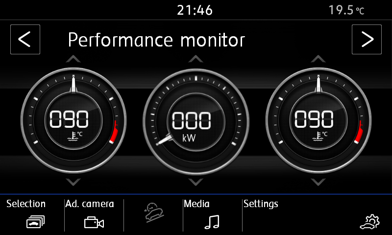

Golf Mk7 infotainment
Screen captures from the original MIB2 Standard interface running in the emulator.

Choose a screen
Launch the emulator locally for touch input and vehicle controls.
Screen captures from the original MIB2 Standard interface running in the emulator.

Launch the emulator locally for touch input and vehicle controls.